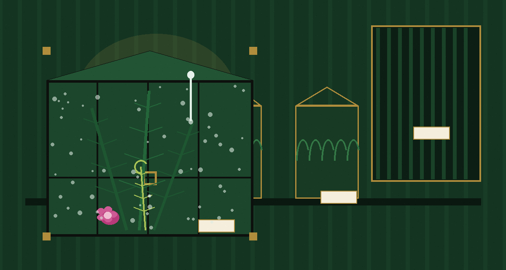
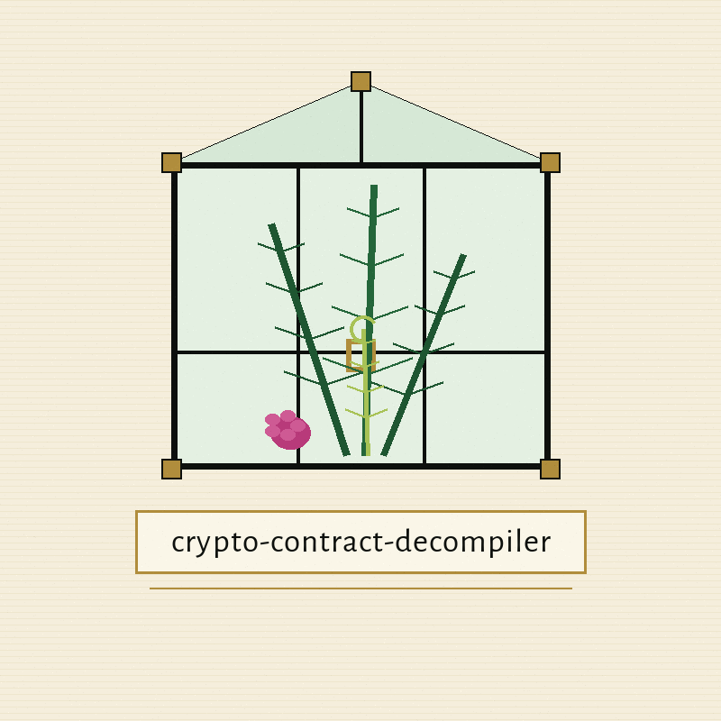
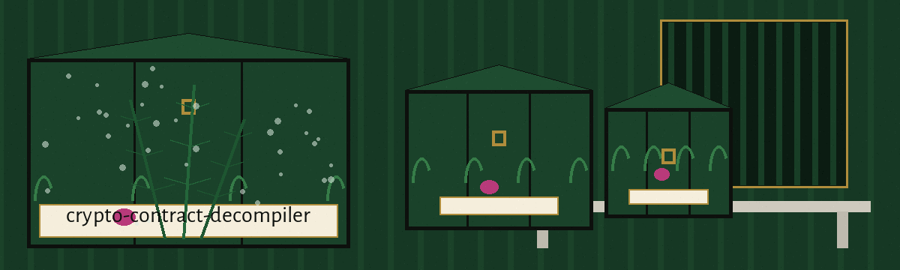

crypto-contract-decompiler: The Victorian Fern Craze Parlour
Theme: The Victorian Fern Craze Parlour. Headings in Big Shoulders Stencil Display SC, reading text in Alegreya Sans.



Four Names, Looked For as Text
The program reads one contract bytecode or source text file and writes a short report. The report lists which of four operation names appear as text in that file. The names are keccak256, sha256, ripemd160, and modexp. Matching is by substring, with letter case ignored.
No Disassembly, No Decompilation
No disassembly happens. No decompilation happens. No external decompiler is called. The report itself calls the work a placeholder analysis. Genuine compiled bytecode, being hex digits and opcode bytes rather than written names, returns an empty list even where the running contract uses all four operations.
Install, as Printed
The install line is printed exactly as the README prints it, in the preserved record below. The organisation there is the right one, and no caution attaches to it. A smaller fact stands beside it: main.py uses the standard library alone, and the README gives no directory change and no dependency step after the clone.
A Report That Contains Its Input
The README usage line is correct and stands without a flag: python3 main.py BYTECODE_FILE. Two output facts stand beside it, drawn from the code and absent from the README. The report begins by copying the whole input file into itself, so a shared report carries the contract text with it. The default output path is output.txt in the caller's directory, and a second run from the same place replaces the first report without warning.
Controls, in README Order
BYTECODE_FILE is a required positional, the path to the bytecode file of the smart contract. The -h control shows help and exits. The --output_file control, short form -o, sets the path for the report, with default output.txt. The --debug control turns on debug logging. No other controls exist.
An Empty List Is Still a Finished Run
A missing input file exits 1. An unreadable input file exits 1. A report that cannot be written exits 1. A completed report exits 0, whether its list holds four names, one name, or none. An empty list is a finished run, not a failed one.
Licence
The README closes with the line Licensed under the terms in LICENSE. The separate LICENSE file carries the MIT License. Both are recorded and neither is rewritten to suit the other.
Record preserved from the README
# crypto-contract-decompiler
Reads a contract bytecode or source text file and writes a short report
listing which of four cryptographic operation names (keccak256, sha256,
ripemd160, modexp) appear as text in it. It does not disassemble or
decompile anything, and it uses no external decompiler; the report
itself labels this a placeholder analysis. A missing input file exits 1.
## Install
`git clone https://github.com/ShadowGuard-AI/crypto-contract-decompiler`
## Usage
`python3 main.py BYTECODE_FILE`
## Parameters
- `BYTECODE_FILE`: Path to the bytecode file of the smart contract.
- `-h`: Show help message and exit
- `--output_file`, `-o`: Path to save the decompiled/analyzed output. Default: `output.txt`.
- `--debug`: Enable debug logging.
## License
Licensed under the terms in LICENSE.
Facts from the code, stated in the prose
This record names: keccak256, sha256, ripemd160, modexp, output.txt, BYTECODE_FILE, --output_file, --debug, python3 main.py BYTECODE_FILE, git clone https://github.com/ShadowGuard-AI/crypto-contract-decompiler, Licensed under the terms in LICENSE, MIT License, placeholder analysis, List the Four Operation Names, Four Names, Looked For as Text, Choose Where the Report Is Saved, Turn On Debug Logging, Show Help, A Report That Contains Its Input, No Disassembly, No Decompilation, An Empty List Is Still a Finished Run.